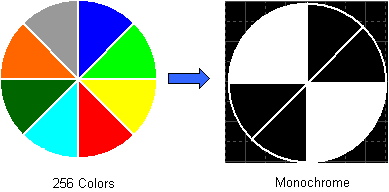
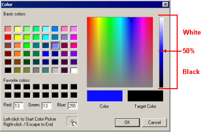
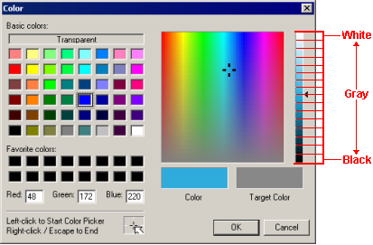
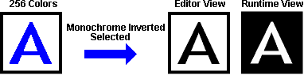

|
|
|
|
|
|
|
|
When you change either the target type or the target color, the panel editor converts the colors in objects, parts, and images (BMP, JPG, EMF, and PNG) to colors that are supported by the new target type or the new target color. For example, when the target color is changed from 256 colors to Monochrome, color objects in the project convert to black and white.

The Editor retains an object's original color settings in the Property Inspector so that when you switch targets or target colors the object's color settings are not lost.
See Section 4.5.1, Target Properties for a list of target machines and their supported color ranges.

When changing targets or a target's color, some areas of an image may become transparent.
Draw a color object, part, or image on a panel and change either the target type or the target color. The panel editor automatically converts the object’s color to a color supported by the new target type or the new target color.
Color conversion is based on a color's luminescence. Color luminescence is shown on the gradient slider.
Monochrome Color Conversion
A color becomes white when its luminescence is in the gradient slider's top 50%.
A color becomes black when its luminescence is in the gradient slider's bottom 50%.

16 Level Color Conversion
When converting colors into 16 Level Gray Scale, the gradient slider is segmented into 16 equal segments. Each segment is 6.25% of the gradient slider's total size. Depending on where a color's luminescence is on the gradient slider, the color converts into one of the 16 gray scale colors. For example, if a color's luminescence is in the bottom segment, the color converts to black.

Color Conversion for High Color Resolution to Low Color Resolution
Colors are converted into the closest associated color.
Color Conversion for Reverse - Monochrome or Reverse - 16 Level Gray Scale
Reverse - Monochrome and Reverse - 16 Level Gray Scale use the same conversion rules as Monochrome and 16 Level Gray Scale conversion; however, the colors become reversed at run time and Simulation. For example, when changing the target color from 256 Colors to Reverse - Monochrome, the object's color converts to black in the Editor. When the object is viewed during run time or during Simulation, the object's color converts to white.


We recommend you create all your objects in color if you are creating a project for a monochrome target machine. The project is more versatile and you can easily move your project to a color-supported target machine in the future.